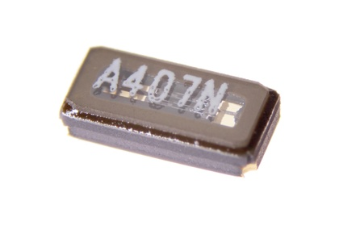
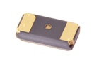

SMD (3215) 32.768 kHz Crystal - X3K327D

Summary
Name: SMD (3215) 32.768 kHz Crystal
ID: XTAL-3215-X-KZ327D-01
Hex ID: X3K327D
WebPage: https://github.com/oomlout/oomlout-OOMP/wiki/XTAL-3215-X-KZ327D-01
Short URL: http://oom.lt/X3K327D
Revision History: https://github.com/oomlout/oomlout-OOMP/blob/master/parts/XTAL-3215-X-KZ327D-01/
| Type |
Size |
Color |
Description |
Index |
XTAL
Crystal |
3215
SMD (3215) |
X
|
KZ327D
32.768 kHz |
01
|
Images

About
This part is awaiting a description.
Specifications
| Info |
Value |
| Type |
Crystal |
| Size |
SMD (3215) |
| Description |
32.768 kHz |
Extra Details
Spotted a mistake, want to add more? Let us know oomp@oomlout.com
All images and resources are licensed [CC BY-SA] unless otherwise stated (ie. the datasheets)